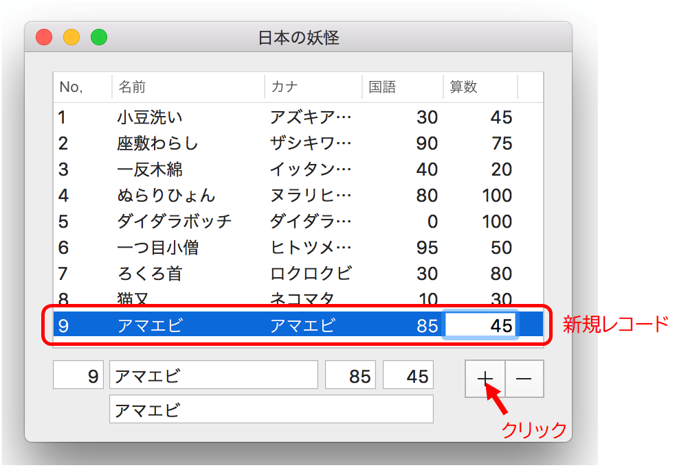

ArrayControllerを使ってテーブルビューを表示する
レコードの追加/削除/ソートを組み込む
ArrayControllerとバインドを使ってテーブルビューを表示し、データの追加と削除、およびソートを行えるようにする。
レコードの追加
追加（＋）ボタンをクリックすると、テーブルビューの最終行に新しいレーコードが作成される。作成されたレコードを選択し、項目（コード、名前、カナ、国語/算数の点数）を入力する。入力はテーブルビュー、テキストビューいずれからでも可能である。

レコードの削除
テーブルビューのレコードを選択して削除（−）ボタンをクリックすると、選択されたレコードが削除される。
ソート
列見出しの「No.」「国語」「算数」をクリックすると、それぞれの列のキーで配列をソートする。連続してクリックすると昇順/降順を繰り返す。
実装手順
レコードの追加
（注１）新しいレコードを追加した後、テーブルビューでその行を選択状態にしようとしてもできない。テーブルビュー1行目が選択状態になってしまう。結局二つの行が選ばられてるような状態。
レコードの削除
ソート
ソートキーを指定したソート記述子（NSSortDescriptor）を作成し、ソートしたい列に組み込む。
テーブルビューの列をクリックしたときに起動するメソッド（NSTableViewDataSourceプロトコル）を実装し、rearrangeObjectsメソッドにより arrangeObjectsメソッドを呼び出す。
arrangeObjectsメソッドをオーバーライドし、列に定義されているソート記述子をもとにソートを行う。
クラス定義の変更
原因のよくわからない不具合に遭遇したので、プロパティの型を一部変更した。
既存の値を変更したり、レコードを追加した後にソートを行うと正しく並び替わらない、ときに実行時エラーが発生したりする。数値プロパティ（コード、国語と算数の点数）の型を NSNumbe から NSInteger に変更したら解決した。原因はよくわからないが、バインドを経由してデータを自動更新したとき不整合が発生しているのかもしれない。バインドを使用しないでプログラムで更新すれば発生しないかもしれない。